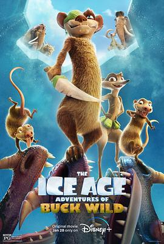

冰川时代：巴克·怀尔德的冒险之旅 / The Ice Age Adventures of Buck Wild
又名：冰川时代：巴克大冒险 / 冰川时代：巴克的冒险 / 冰河世纪：阿北大冒险(港) / 冰原历险记：巴克大冒险(台)
作品信息
| 导演 | 约翰·C·唐金 |
| 编剧 | 吉姆·赫克特 / Ray DeLaurentis / William Schifrin |
| 主演 | 乌特卡什·安邦德卡尔 / Sean Kenin / 杰克·格林 / 艾伦·哈里斯 / 多米妮克·詹宁斯 / 贾斯蒂娜·马查多 / 西蒙·佩吉 / 斯凯勒·斯通 / 文森·童 / 西奥多·博尔德雷斯 / Jason Harris / Kristin McGuire / 夏奇拉·贾奈·帕耶 / Peter Pamela Rose / Jason Linere-White |
| 类型 | 喜剧 / 动画 / 家庭 / 冒险 |
| 制片国家/地区 | 加拿大 / 美国 |
| 语言 | 英语 |
| 上映日期 | 2022-01-28(美国网络) |
| 片长 | 82分钟 |
| IMDb | tt13634480 |
说过什么
2022-01-30 08:07:42
广播 · 想看
最后一次看到是 2026-08-01T11:08:50+10:00 · 豆瓣原页